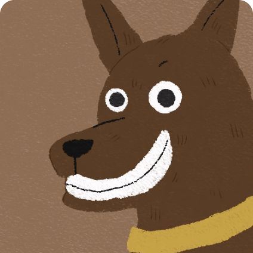
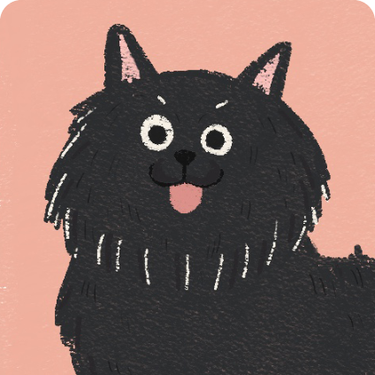

-

等家中-華仔
目前7個月大的華仔，是個愛笑的貪吃鬼，喜歡吃西 瓜還有蓮霧，是一隻吃素的乖狗狗，會挑食不喜歡...
more
-

等家中-小呆
T小呆有著圓圓的大眼睛，一歲的他來自台中，原本陪 著一位老奶奶生活，上個月奶奶行動不便不能再陪...
more
-

等家中-Snow
看起來很兇但特別怕打雷的Snow，很喜歡吃冰，冰 冰的水也喜歡，如果摸他的額頭會發出吹口哨的聲...
more